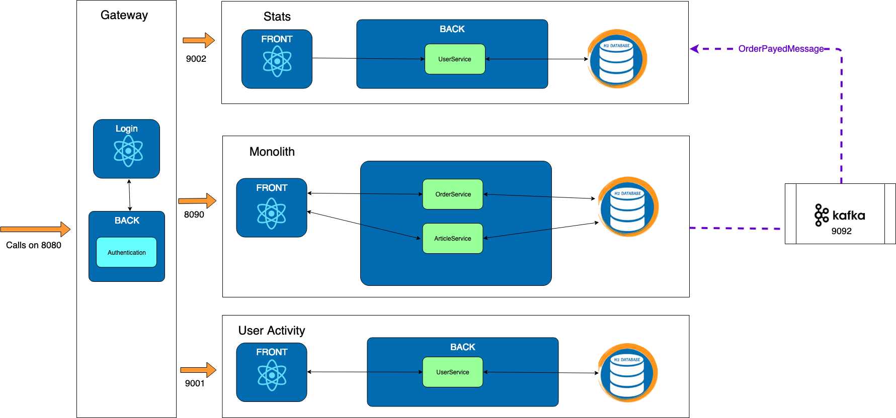

Exercise 4 : Stats with Kafka
Previously on HOMicS -> Exercise 3: Stats
Context
Do you remember what we said at the beginning about getting the monolith thinner?
The previous solution has a considerable drawback. We had to add logic in the monolith and it's not really scalable.
A word on KAFKA
Apache Kafka is an event streaming platform capable of handling trillions of events a day.
Initially conceived as a messaging queue by LinkedIn, Kafka is based on an abstraction of a distributed commit log.
The main advantages of kafka are :
- High-throughput
- Low Latency
- Fault-Tolerant
- Scalability
- Distributed
Keep in mind, adding kafka comes with a cost. It's a library with a learning curve and advance concepts.
We are using Kafka to produce, consume and store messages.
Goal
We will change the exercise 3 but this time using kafka. No need for table and crawler anymore.
When an order is payed, an event is sent.
Kafka stores it until a consumer reads it.
It's very convenient: our monolith doesn't have to battle with acknowledgment anymore.
It's the stats microservice which consumes the message.

Setup
-
Before implementing anything, for this exercise, we need to have a running instance of kafka. The easiest way is to launch it via docker. We can then easily restart or reset it. You will find a docker-compose file already present.
So first of all, download docker and start docker. Go back to the Setup page if needed.
We are using Spring for Apache Kafka. All the configuration for serializing, topic creation is done in the common-messaging lib. If you want to check it out, go on github in the HOMicS project.
-
Run kafka
In
/tools/docker/kafka/, the docker-compose file will launch an instance of zookeeper and kafka. To start kafka simply run :cd commons-messaging docker compose upTo stop cd commons-messaging docker compose stop
At your keyboard
You can start by checking out the branch for the fourth exercise: git checkout exercise-4. This exercise is split in
two parts.
First, you will edit the Monolith to send a message to kafka when an order is payed.
Secondly, you will consume messaging on the Stats microservices.
Producing kafka messaging with the Monolith
-
Send a kafka message
Switch the API calls in the monolith to send an OrderPayedMessages message to kafka.
To send a message with kafka :
private KafkaTemplate<String, OrderPayedMessage> kafkaTemplate; Message<OrderPayedMessage> message = MessageBuilder .withPayload(new OrderPayedMessage(1,1,"user")) .setHeader(KafkaHeaders.TOPIC, TOPIC_STATS) .build(); kafkaTemplate.send(message); -
Verify that you sent a kafka message
You can verify the creation of your message by creating a consumer via command line on your docker. To do so, you need to run the following command:
docker exec $(docker ps | awk '$2 == "wurstmeister/kafka:1.0.0"' | awk '{print $1}') kafka-console-consumer.sh --bootstrap-server localhost:9092 --topic STATS --from-beginningYou should see the previous carts you payed.
Consuming kafka messaging with the Stats microservice
-
In the microservice, retrieve the message with kafka :
@KafkaListener(topics = TOPIC_STATS, groupId = GROUP_ID, containerFactory = "statsMessageFactory") public void onImpactStockMessage(@Payload OrderPayedMessage impactStockMessage) { ... } -
Save this message into the database
Verification
To verify that stats is well implemented, launch the gateway, and the monolith applications:
# Run gateway project
mvn spring-boot:run -pl gateway
# Run monolith project
mvn spring-boot:run -pl monolith
Login to the application on the login page. Create two carts and pay for them.
You see a 404 page on the Stats Micro tab. The stats microservice isn't up and running at that point. This behaviour makes sense.
Now, start the microservice Stats:
# Run stats project
mvn spring-boot:run -pl stats
Navigate to the Stats Micro tab. You should see the same page than before with the stats from the previous two orders. All the stats should be retrieved. If you don't see them, refresh few times to let the monolith discuss with the microservice
It's exactly the same actions than exercise 3.